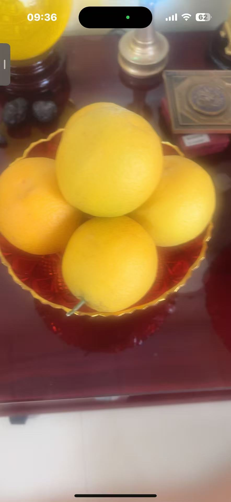
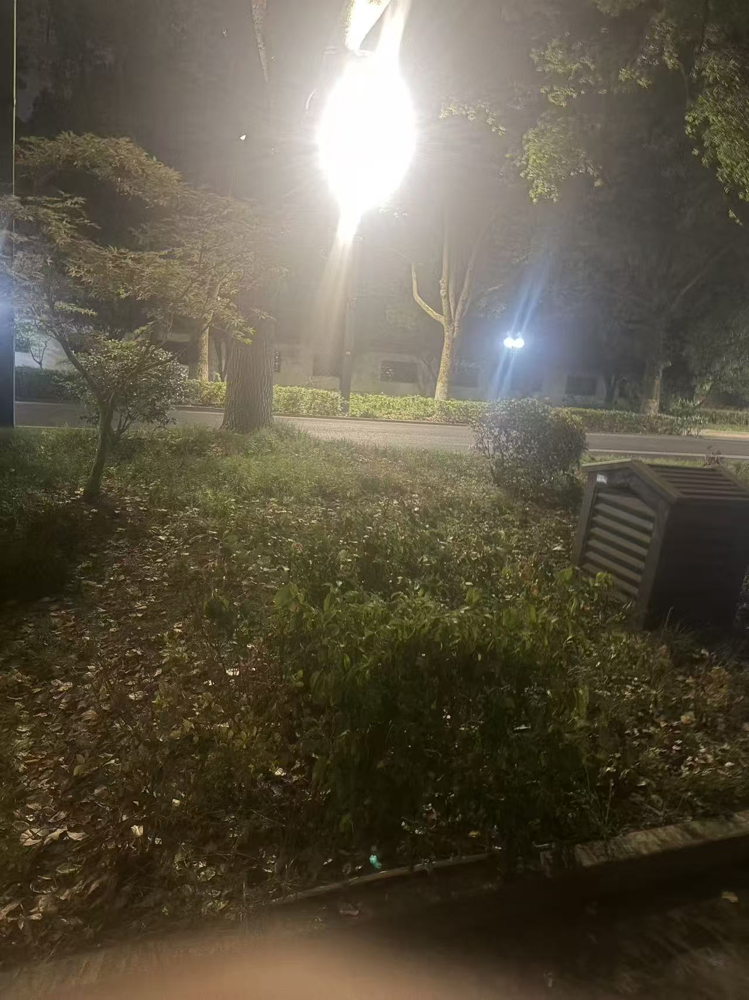

20260821谢大师 给玄女供的水碗 气光，波状
修炼修行 原始对话记录气光，波状
能量场
中奖，再来一碗
[强][强][强]
玄女娘娘的供杯
[呲牙][呲牙]
清净心
清净行
清静境
@谢芳玲 眼睛能看到了吗
可以
民俗有请神下药
你看见什么
杯子有这能量光，里面的水就能给人治病了
气功时代，科委叫信息水
我每天浇花

这是我供的水果
师父，小朋友拍的这个呢？
加持过的小朋友，加持过的手机
[呲牙][呲牙]
下一步，聚炁成型
能拍出型来

指令手机拍不同时间
都是可以做到的
现在只是拍到能量场，
无所不能
不下指令，手机就不知道让他干什么
如何指令手机
比如拍这个光，就说出来，跟手机说，拍到光拍到光
盯着屏幕，屏幕忽明忽暗，自动调焦
屏幕上出现最强的光，就点拍
就拍到了
指令手机，是指令光体手机
我拍的时候不需要，直接拍
不是指令实体手机
[呲牙][呲牙]
你不需要指令，是你已经看到实物上出现光了

车光
[强][强][强]
有灵泉水吗
[疑问][疑问]
啥意思
杯子有这能量光，水就能给人治病
这一页记的是一只给玄女娘娘供的水碗。开头几个词，短："气光，波状。""能量场。"
有人打趣：中奖，再来一碗。
接着三句连排。清净心，清净行，清静境。
问谢芳玲，眼睛能看到了吗。答，可以。记录下面写："民俗有请神下药。"又问，你看见什么。然后是一句要紧的："杯子有这能量光，里面的水就能给人治病了。"
他补了一句来路。"气功时代，科委叫信息水。"
底下是日常。"我每天浇花。"配一张供的水果。
再往下是手机。有小朋友拍的照片，问是什么。答，加持过的小朋友，加持过的手机。"下一步，聚炁成型，能拍出型来。"
指令手机拍不同时间，都是可以做到的。"现在只是拍到能量场。""不下指令，手机就不知道让他干什么。"
怎么指令，也写了。比如拍这个光，就说出来，跟手机说，拍到光拍到光。盯着屏幕，屏幕忽明忽暗，自动调焦。屏幕上出现最强的光，就点拍，就拍到了。
有一句要分清。"指令手机，是指令光体手机。""不是指令实体手机。"
师父自己拍，不用指令。原因是，他已经看到实物上出现光了。末尾两个字：车光。